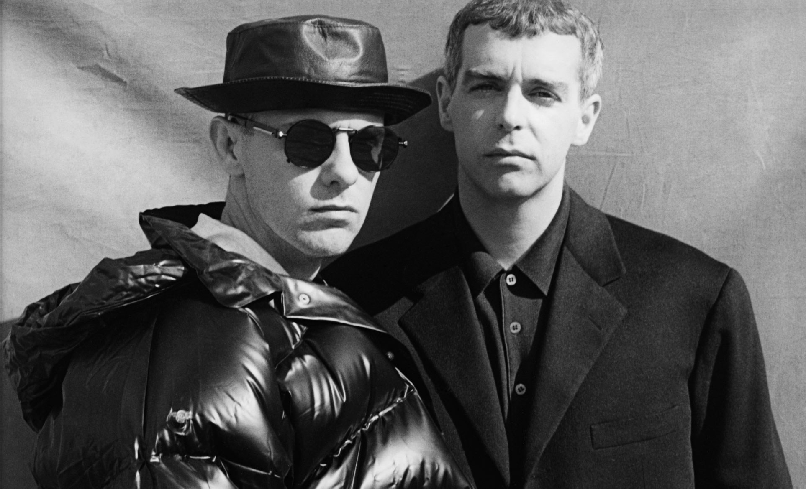
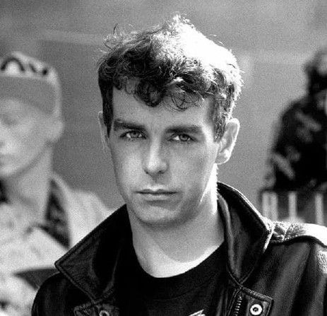
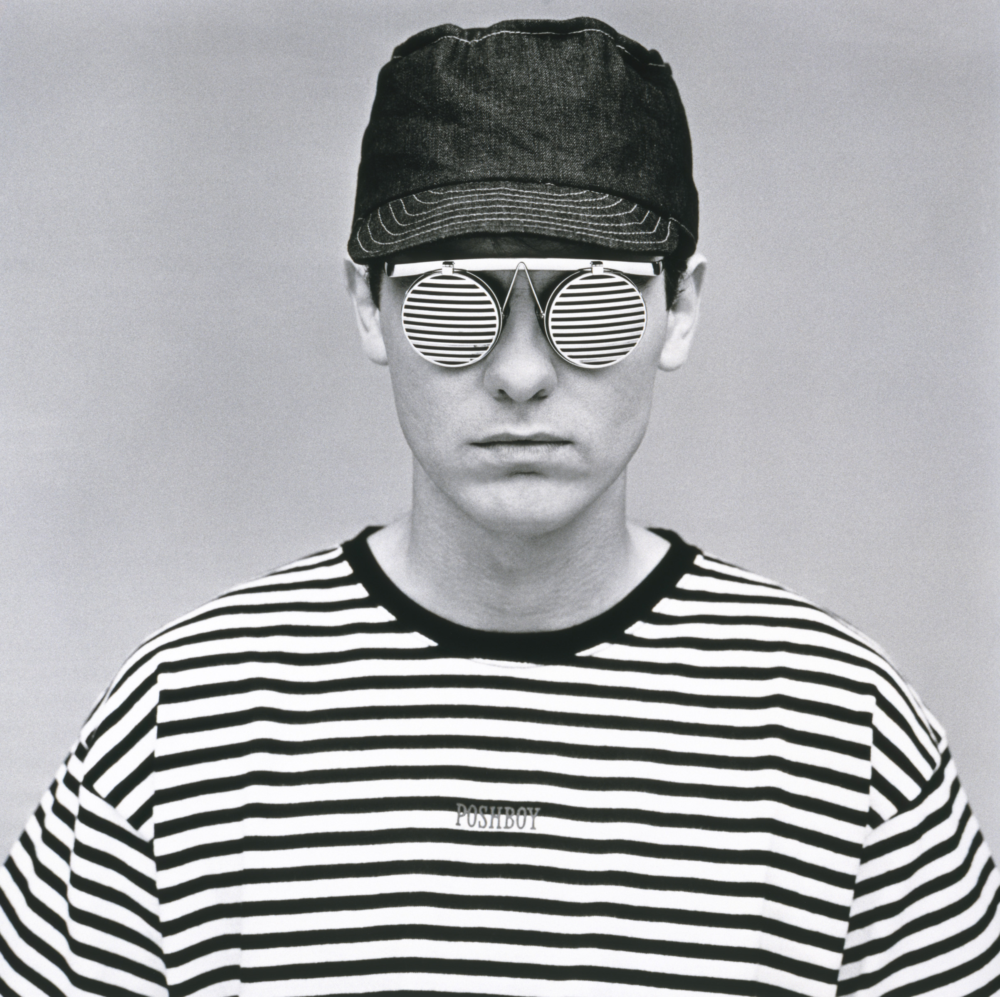

Acerca de Pet Shop Boys (PSB)
Pet Shop Boys es un dúo de synthpop británico, conformado por el cantante y compositor Neil Tennant y el tecladista y compositor Chris Lowe, formado en Londres, en 1981. Tuvo su máximo esplendor durante mediados de los años 80 y hasta finales de los 90, y hasta la fecha, el grupo ha vendido más de 100 millones de discos en todo el mundo.
Integrantes de PSB
Neil Tennant (Voz, teclados, sintetizador, guitarra)Neil Francis Tennant (North Tyneside, 10 de julio de 1954), conocido como Neil Tennant, es un cantante y compositor británico, integrante, desde 1981, del dúo de synth pop Pet Shop Boys, junto a Chris Lowe.
Estudio historia en el politécnico de North London. Antes de convertirse en músico profesional, Tennant fue editor de la revista Smash Hits, una experiencia que le dio acceso íntimo al engranaje del pop comercial. Desde ahí aprendió cómo se construían los ídolos y qué había detrás de cada éxito. Pero Tennant no solo observaba, también analizaba. Sabía que el pop podía ser algo más que espectáculo: podía ser pensamiento, estilo y resistencia.
Aunque Neil comenzó a componer canciones a los 14 años, no será hasta los 32 cuando publique su primer álbum junto a Chris Lowe, un estudiante de arquitectura a quien conoció en una tienda de tecnología musical.
Chris Lowe (Sintetizadores, piano, batería electrónica y caja de ritmos)
Christopher Sean Lowe (Blackpool, Lancashire, 4 de octubre de 1959) es teclista británico del dúo Pet Shop Boys desde 1981.
Lowe estudió arquitectura en la Universidad de Liverpool desde 1978, pero nunca se graduó debido a la formación de Pet Shop Boys, como declaró varias veces en apariciones en televisión y en el documental "Life in Pop". Mientras realizaba unas prácticas de arquitectura en Londres en 1981, diseñó una escalera para un parque industrial de Milton Keynes. En ese momento conoció a Neil Tennant en una tienda de alta fidelidad en el Kings Road en Londres.
Lowe generalmente desempeña la función de teclista de Pet Shop Boys; en algunas ocasiones ha realizado el acompañamiento de coros.
Discografía
Da click en alguno de los enlaces para abrir el contenido en Youtube Music
Recomenaciones
Ingresa tus datos, y selecciona alguno de los 15 albunes de PSB para enviarte las recomendaciones con sus mejores (de cada album). temas